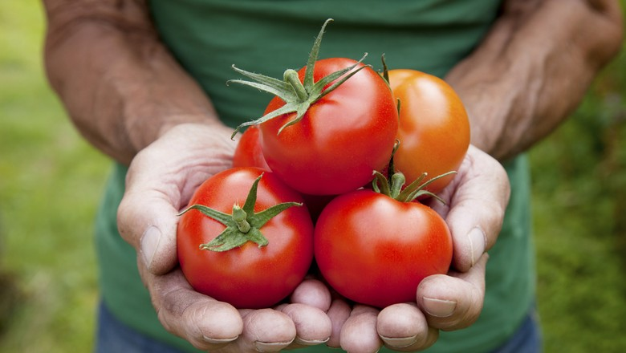
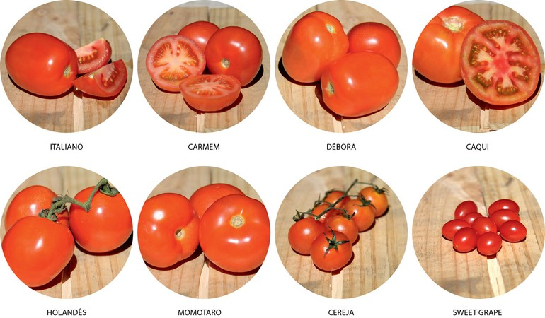

O tomate é um dos alimentos mais consumidos no mundo e no Brasil. Na salada, no molho, no
suco, na pizza, na macarronada…
O fato é que a produção mundial de tomate gira em torno de 130 milhões de
toneladas ao ano, das quais cerca de 88,0 milhões de toneladas são destinados ao consumo
do fruto in natura e os outros 42,0 milhões de toneladas destinadas a indústria.

Os frutos têm apenas três gomos fazendo com que sejam muito “carnudos” e com poucas sementes, deixando a relação polpa/semente/casca favorável quando o assunto é molho de tomate.
Responde por cerca de 75% dos tomates vendidos nos supermercados. Também conhecido como Longa Vida (por razões autoexplicativas). Aroma e coloração pouco expressivos. Muito utilizado em saladas
O maior representante do grupo Santa Cruz. Tem a casca fina, muita semente e água. Muito utilizado em molhos caseiros e na produção de tomates secos.
Ideal para consumo cru, em saladas ou sanduíches. Sabor forte, levemente picante, coloração bastante avermelhada.
Usualmente comercializado em cachos ou pencas. Tem baixa acidez e doçura acentuada. Utilizado em saladas e receitas quentes.
Produto de origem japonesa para ser consumido principalmente cru. A consistência da polpa é mole e a coloração rosada. Possui vários gomos e o paladar é levemente adocicado.
Diferencia-se dos demais pelo tamanho, muito pequeno, mas também pelo elevado grau de doçura e pelo grande teor de água. Utilizado em saladas, para decoração e finalização de pratos.
Seu uso é semelhante ao tomate Cereja, mas seu fruto é ainda mais adocicado e o formato mais alongado, lembrando uma uva.